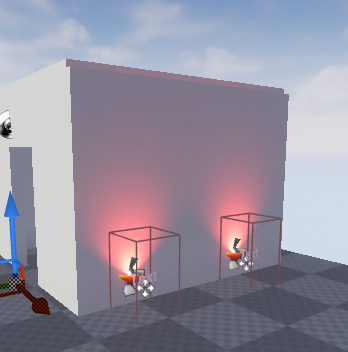
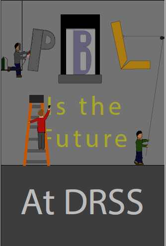

9th grade
Welcome to my 9th grade page. Here you can find some projects I have done this year. The projects I chose for this year are the car Project, the Unreal engine project, and the propaganda poster project. Here is a little more about them.
"How has my performance in 9th grade prepared me for 10th grade?" Throughout my 9th grade I have been prepared for 10th grade by leaning things like CAD, short films, and mock trials. I learned cad through the car project, short films through the silent film project, and mock trials through its corresponding project. At the beginning of the year I knew there would be a larger workload but I thought I could handle it. BUT BOY WAS I WRONG. I don't think anyone was ready for the increase of workload that we would be getting. However as the year went on I got a bit more comfortable with the workload and I think I will be able to handle next year's work load
My greatest growth this year was learning to do more advanced CADding with the car project. In the car project we had to reverse engineer a toy car and make it into a CAD (Computer Aided Design) file. We started by taking each segment of the car and measuring everything we could that would help us build it. We then took these measurements and put them into a sketch of an outline of the piece so we knew which measurements went where. We then went into inventor and CADded each piece according to the sketched we made, and we made sure to extrude or revolve each piece accordingly. Then, we took each piece and made a sketch file out of them. After this we put all of the pieces we had into an assembly file to re-assemble it into a car. Finally we took our assembly and made a short presentation of it. At the start of this project I knew very little about cadding. I knew how to make squares, and that was it. However, through reverse engineering and the auto-desk tutorials, I quickly picked up how to do more advanced CAD. I also learned how to properly sketch something.


My greatest struggle this year was Unreal Engine project. In this project we designed a video-game museum to showcase what we learned in the Woman's suffrage unit. First we needed to learn how to use the unreal engine. We watched tutorials on how to use the engine and followed a guide to make a small house. We also learned about the way they make everything flow nicely. We then took what we learned and made it into our museum. Some of us either taught ourselves, were taught by others, or watched videos on how to use the landscape tool to make a nice background and nice looking boundaries in our museum. A lot of us used some extra videos online to learn how to use the blueprint interface to make objects like teleporters. I ended up making a simple museum in a valley. After we finished our museum we made a video showing where specific parts of our museum were. I struggled in this because I had a hard time with the programming part of it and spent too much time on the landscape. My museum didn't turn out the best and for my video I didn't have sound. Overall I didn’t manage my time very wisely. If I were to do this project again I definitely would create a schedule of what needs done and generally manage my time better.

This year I excelled in the propaganda poster project . In this project we made posters in an art style based on a time period in history. We started by researching different propaganda posters related to our time period. We then worked on making a sketch of how we wanted it to look. After some critique, we made concept art. This was like a second draft of our poster and included color. Finally, after more critique, we made our final draft using the skills we learned in adobe illustrator. I made my poster in the 1930's era style and my theme was PBL. Overall I think my poster turned our well, it looks like people are assembling the sign that says "PBL is the future" and underneath is," AT DRSS."

During 9th grade I have experienced a lot. Back in august I didn't know how to CAD, and I couldn't remember a lot about Adobe illustrator. Now however, I have learned how to properly CAD, make a propaganda poster, make a level in unreal, and a lot of other things. I have also learned how to make better decisions and manage my time better. I definitely feel like I learned a lot this year and am ready for the 10th grade.
©2019. Wyatt Smith. All rights reserved